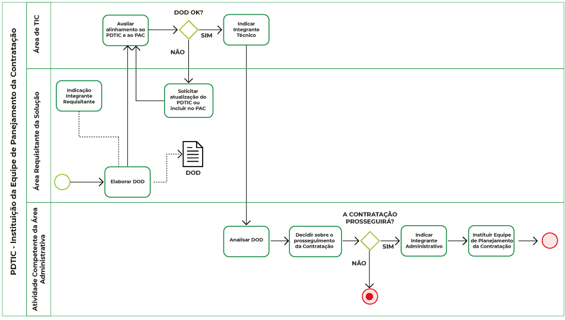
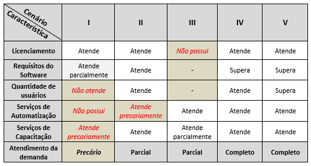
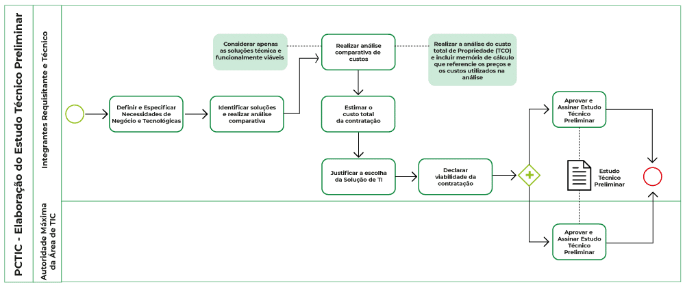
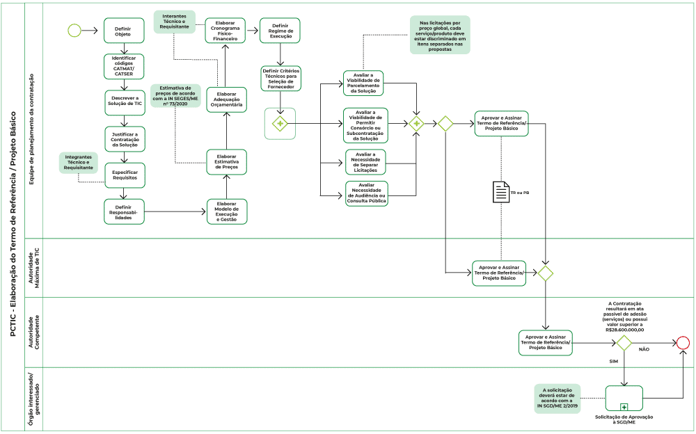

IN SGD/ME 1/2019
Alinhamento com Planejamento Estratégico (art. 6)
Plano Diretor de TIC do órgão/entidade;
previstas no Plano Anual de Contratações;
alinhadas à Política de Governança Digital;
integradas à Plataforma de Cidadania Digital, quando tiverem por objetivo a oferta digital de serviços públicos;
padrões de TIC do Governo Federal
Equipe de Planejamento da Contratação (EPC) - art. 2º, IV
integrante técnico (DTI) + integrante administrativo (SPGF) + itegrante requisitante
- esses 3 papeis não podem ser acumulados pelo mesmo servidor

A instituição da EPC é um ato administrativo, geralmente Portaria
Artefatos
1. Documento de Oficialização da Demanda (DOD):
1.1. necessidade da contratação
1.2. explicitação da moticação e dos resultados a serem alcançados com a contratação
1.3. indicação da fonte dos recursos para contratação
1.4. indicação do integrante requisitante para composição da Equipe de Planejamento da Contratação
- Vide formulário do DOC
2. Estudo Técnico Preliminar da Contratação (ETPC):
Documento que descreve as análises realizadas em relação às condições da contratação em termos de necessidades, requisitos, alternativas, escolhas, resultados pretendidos e demais características, e que demonstra a viabilidade técnica e econômica da contratação.
As atividades desta etapa:
2.1. Definir e especificar requisitos de contratação: necessidades de negócio e tecnológicas;
2.2. Identificar soluções e realizar análise comparativa
;
2.3. Realizar análise comparativa de custos (principalmente via consultas ao painel de preços do governo federal/portal de compras MG; e contratações similares de outros entes públicos);
2.4. Estimar o custo total da contratação;
2.5. Justificar escolha da solução de TI
2.6. Declarar viabilidade de contratação
2.7. Aprovar e assinar Estudo Técnico Preliminar
- Fluxo de elaboração

No ETP devemos ter atenção a requisitos que influenciam no valor, no resultado e/ou no desempenho do objeto, tais como:
Equipamentos necessários ao funcionamento da solução.
Serviços que devem ser executados (mesmo em aquisições de bens, pode haver serviços de instalação ou configuração envolvidos).
Produtos que devem ser entregues.
Padrões que a contratação deve seguir ou atender.
Público alvo e pessoal necessário para operar a solução.
Competências do pessoal que vai executar os possíveis serviços ou responsabilizar-se pelos produtos.
Necessidade de realizar capacitações.
Demandas semelhantes de outras áreas que não a requisitante, mas envolvidas no processo em que a solução vai intervir, ou que podem necessitar da mesma solução.
Requisitos de contratação
a) NECESSIDADES DE NEGÓCIO: que cabem ao REQUISITANTE:
de negócio;
de capacitação;
legais;
de manutenção;
temporais;
de segurança
sociais, ambientais e culturais
b) NECESSIDADES TECNOLÓGICAS: que cabem ao INTEGRANTE TÉCNICO (~DTI)
de arquitetura tecnológica, composta de hardware, software, padrões de interoperabilidade, linguagens de programação, interfaces, dentre outros;
de projeto e de implementação, que estabelecem o processo de desenvolvimento de software, técnicas, métodos, forma de gestão, de documentação, dentre outros;
de implantação, que definem o processo de disponibilização da solução em ambiente de produção, dentre outros;
de garantia e manutenção, que definem a forma como será conduzida a manutenção e a comunicação entre as partes envolvidas;
de capacitação, que definem o ambiente tecnológico dos treinamentos a serem ministrados, os perfis dos instrutores, dentre outros;
de experiência profissional da equipe que executará os serviços relacionados à solução de TIC, que definem a natureza da experiência profissional exigida e as respectivas formas de comprovação dessa experiência, dentre outros;
de formação da equipe que projetará, implementará e implantará a solução de TIC, que definem cursos acadêmicos e técnicos, formas de comprovação dessa formação, dentre outros;
de metodologia de trabalho;
de segurança da informação
3. Termo de Referência
Para processos regidos pela Lei nº 10.520/2002, isto é, para o pregão, utilizamos o TR. Já para os regidos pela Lei nº 8.666/1993, modalidades de concorrência, tomada de preços, convite, etc., usamos o PB, inclusive nas hipóteses de dispensa ou inexigibilidade.
Em licitações de bens e serviços de TIC regidas pela IN SGD/ME nº 1/2019, usamos quase sempre o TR, porque, em regra, elas ocorrem na modalidade pregão

Etapas da elaboração do TR:
3.1. Definir Objeto
3.2. Identificar Códigos CATMAT/CATSER
3.3. Descrever a solução de TIC
3.4. Justificar a contratação da solução
3.5. Especificar requisitos
3.6. Definir responsabilidades
3.7. Elaborar cronograma físico-financeiro e elaborar adequação orçamentária
3.8. Elaborar estimativa de preços
3.9. Elaborar modelo de execução e gestão
3.10. Definir regime de execução
3.11. Definir critérios técnicos para seleção de fornecedor
3.12. Avaliar viabiidade de parcelamento da solução
3.13. Avaliar necessidade de permitir c onsórcio ou sibcontratação da solução
3.14. Avaliar necessidade deseparar licitações
3.15. Avaliar necessidade de audiência ou consulta pública
3.16. Aprovar e assinar TR
Gestão de riscos em todas as 3 macroetapas
riscos relacionados à contratação, tanto aos relativos ao processo de planejamento propriamente dito quanto àqueles inerentes ao objeto a ser contratado, bem como aos futuros riscos das fases subsequentes, isto é: Seleção do Fornecedor de TIC (SFTIC) e Gestão do Contrato de TIC (GCTIC).
à medida que avançamos no PCTIC, vamos compilando os riscos observados ao longo das atividades e tomando as ações e decisões de tratamento de riscos adequadas na fase do PCTIC, visando aumentar a chance de sucesso da nossa contratação. Também vamos modelando o objeto de forma a mitigar (reduzir) riscos relativos às fases seguintes, que com certeza vamos identificar.
Tudo isso é incorporado a um artefato chamado [Mapa de Gerenciamento de Riscos (MGR)](https://github.com/dados-mg/projeto-contrato/blob/main/materiais-guias-referencia/(https://github.com/dados-mg/projeto-contrato/blob/main/materiais-guias-referencia/1-artefatos-2019-documento-de-oficializacao-da-demanda-v1-0.odt).
ref seção IV, Capítulo III da IN SGD/ME nº 1/2019
- Riscos mais comuns à fase de planejamento de contratação de TIC:
Risco de mudança de escopo
Risco de construção de especificações técnicas inadequadas
Risco de haver falta de compromisso das áreas na construção ou implantação
Risco de incerteza quanto aos volumes a contratar ou à disponibilidade de recursos
Vedações e demais exigências
- art. 5º
VII - prever em edital exigência que os fornecedores apresentem, em seus quadros, funcionários capacitados ou certificados para o fornecimento da solução, antes da contratação
VIII - adotar a métrica homem-hora ou equivalente para aferição de esforço, salvo mediante justificativa e sempre vinculada à entrega de produtos de acordo com prazos e qualidade previamente definido
Papéis de integrantes da Equipe de Planejamento da Contatação (EPC) não podem ser acumulados pelo mesmo servidor (art. 10)
Registro e preservação do histórico das deciões da EPC (art. 9)
Transparência: publicação do DOD, do ETP e do TR (art. 34)
Direitos, licenças, atualizações
3.4. Os direitos relativos aos softwares desenvolvidos no âmbito dos órgãos e entidades integrantes do SISP em decorrência de relação contratual, ou de vínculo trabalhista, pertencem ao órgão ou à entidade contratante, salvo expressa disposição em contrário, consoante art. 17, inciso I, alínea “h” desta Instrução Normativa, e art. 4º da Lei nº 9.609, de 19 de fevereiro de 1998.
3.5. É vedado aos agentes públicos ou terceiros apropriarem-se, para fins comerciais, dos softwares caracterizados no item 3.4, consoante art. 17, inciso I, alínea “h” desta Instrução Normativa, e art. 4º da Lei nº 9.609, de 1998.
3.6 A Portaria STI/MP nº 46, de 28 de setembro de 2016, e suas atualizações devem ser integralmente observadas quando da cessão, acesso e utilização de qualquer Software de Governo ou Software Público Brasileiro.” (NR)